Lancetas
Recolección capilar
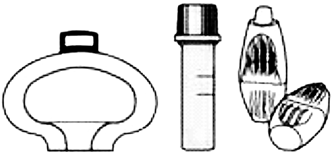
DESCRIPCIÓN:
Lanceta BD MICROTAINER® Contact-Activated:
• Fácil de usar.
• Se activa al contacto con la piel.
• Exactitud de punción.
• Simplifica el procedimiento.
• Promueve la seguridad del trabajador y el paciente.
INSTRUCCIONES DE USO:
|
1. Identifique el lugar a puncionar (área sombreada) y asegúrese que esté limpia y desinfectada. |
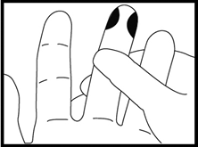 |
|
2. Gire el dispositivo plástico que asegura la esterilidad de la lanceta. Deséchelo. |
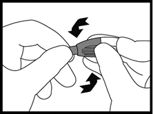 |
|
3. Posicione firmemente la lanceta contra el sitio de punción como se ilustra. Sostenga la lanceta entre los dedos. |
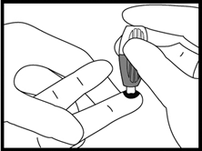 |
|
4. Para activar, presione la lanceta firmemente contra el sitio de punción. No remueva la lanceta del lugar hasta que se escuche el “click” de que ya ha sido activada. |
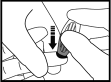 |
|
5. Deseche la lanceta y proceda a realizar la colección de la muestra. |
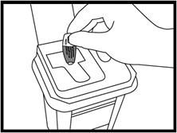 |
* Consulte la CLSI para recomendaciones en tomas capilares.
DESCRIPCIÓN:
Lanceta BD MICROTAINER® Quikheel:
• Fácil de usar.
• Incisión rápida y automática.
• Retracción automática y permanente.
• Corte pendular idóneo para punción en talón.
• Promueve la seguridad del trabajador y el paciente.
• Lanceta ideal para Tamiz Neonatal.
INSTRUCCIONES DE USO:
|
1. Identifique el lugar a realizar la incisión (área sombreada) y asegúrese que esté limpia |
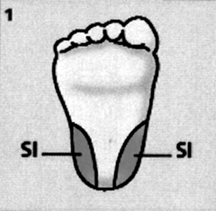 |
|
2. Posicione la lanceta contra el sitio de insersión con el logo hacia usted. Coloque el área de salida de la navaja en un ángulo de 90° respecto a las áreas permitidas para realizar la incisión. |
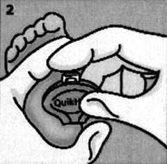 |
|
3. Con el dedo índice active la lanceta presionando el botón blanco. Espere al menos 3 segundos para remover la lanceta. |
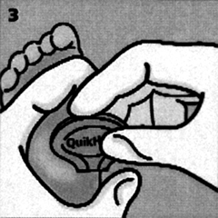 |
|
4. Deseche la lanceta en el colector de punzocortantes. |
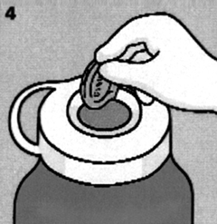 |
|
5a. Si realiza toma de muestra para recolección capilar con Tubo BD Microtainer®, utilice el orden sugerido de toma conforme a CLSI, siguiendo el protocolo de su institución. |
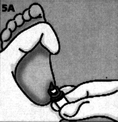 |
|
5b. Si realiza Tamiz Neonatal, recolecte la muestra en papel filtro de acuerdo a lo establecido en la técnica conforme al CLS. |
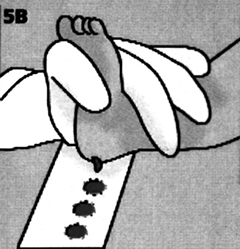 |
* Consulte la CLSI para recomendaciones en tomas capilares y punción en talón.
DATOS COMPLEMENTARIOS: Para mayor información sobre asesoría técnica llamar a:
BECTON DICKINSON DE MÉXICO, S. A. de C. V.
Teléfono: (55) 5999-8200.
Directo: (55) 5999-8360.
® Marca registrada
www.bd.com/mx